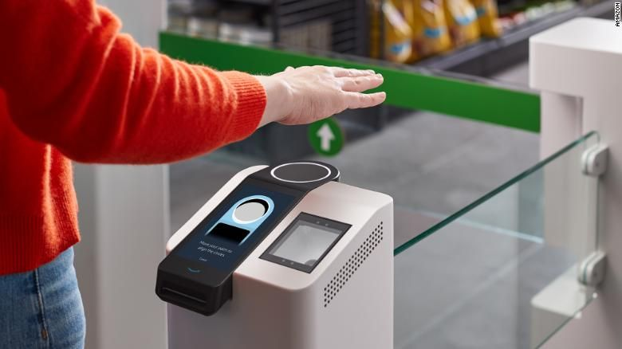

W dwóch sklepach firmy Amazon wprowadzono pilotażowy system dostępu i płatności – Amazon One. Dzięki czytnikowy klient może powiązać
swoją kartę kredytową z odciskiem dłoni, a następnie wejść do bezobsługowego sklepu dzięki jednemu machnięciu ręką i tak samo zapłacić.

Jak zapewnia Amazon, pierwsza rejestracja zajmuje niespełna minutę. Wystarczy umieścić w czytniku kartę, a nad nim swoją dłoń – nie trzeba
dotykać urządzenia. Aparat wykonuje wiele zdjęć linii i grzbietu dłoni, rejestruje niektóre szczegóły podskórne, takie jak żyły,
które nie są widoczne na zwykłych zdjęciach.
Gdy czytnik zeskanuje linie papilarne, karta zostanie „sparowana” z danymi biometrycznymi klienta. Od tej pory będzie mógł wejść do
sklepu skanując dłoń, a koszt wybranych przez niego towarów zostanie pobrany ze wskazanej karty.
Na początek użytkownicy będą mogli połączyć jedną kartę kredytową z jedną lub dwiema dłońmi. Możliwe, że na dalszym etapie urządzenie umożliwi dodanie po jednej karcie do każdej z dłoni. Amazon One jest obecnie dostępny jedynie w dwóch sklepach Amazon Go w Seattle.
Dilip Kumar, wiceprezes Amazona ds. fizycznej sprzedaży detalicznej i technologii, powiedział CNN Business, że prace nad systemem Amazon One trwały na długo przed pandemią. Fakt, że pozwala na całkowicie bezpieczne i bezdotykowe transakcje sprawia, że idealnie wpasowuje się w okoliczności.
Kumar mówi, że Amazon One może być stosowany nie tylko do płatności. Dane biometryczne mogą posłużyć nam zamiast tradycyjnych przepustek do pracy, czy dowodów tożsamości. Na razie jednak firma skupia się na rozszerzeniu opcji „płatności dłonią”. W pierwszej kolejności rozwiązanie zostanie wprowadzone w innych sklepach Amazona, ale firma jest otwarta na udostępnienie technologii innym firmom i partnerom komercyjnym.
– Użytkownicy powinni mieć możliwość korzystania jedynie z samej dłoni, żeby wchodzić i robić zakupy w wielu sklepach. Zachęcam ludzi do wypróbowania tego rozwiązania, zobaczenia, jak im się to podoba – powiedział Kumar.
CNN zauważa, że pomysł przekazania danych biometrycznych jednemu z największych sprzedawców detalicznych w Stanach Zjednoczonych może budzić obawy. Tym bardziej, że Amazon już wcześniej znalazł się w ogniu krytyki obrońców prawa do prywatności po tym, jak zapowiedział sprzedaż programu do rozpoznawania twarzy policji.
Kumar zapewnia, że w przypadku Amazon One firma nie przechowuje żadnych informacji na skanerach wejściowych w sklepach. Wszystkie odciski dłoni są szyfrowane i przechowywane online. Amazon celowo też postawił na odcisk dłoni, a nie inne dane biometryczne, m.in. dlatego, że – jak tłumaczy wiceprezes – klient musi wykonać celowy gest, aby zeskanować ślad.